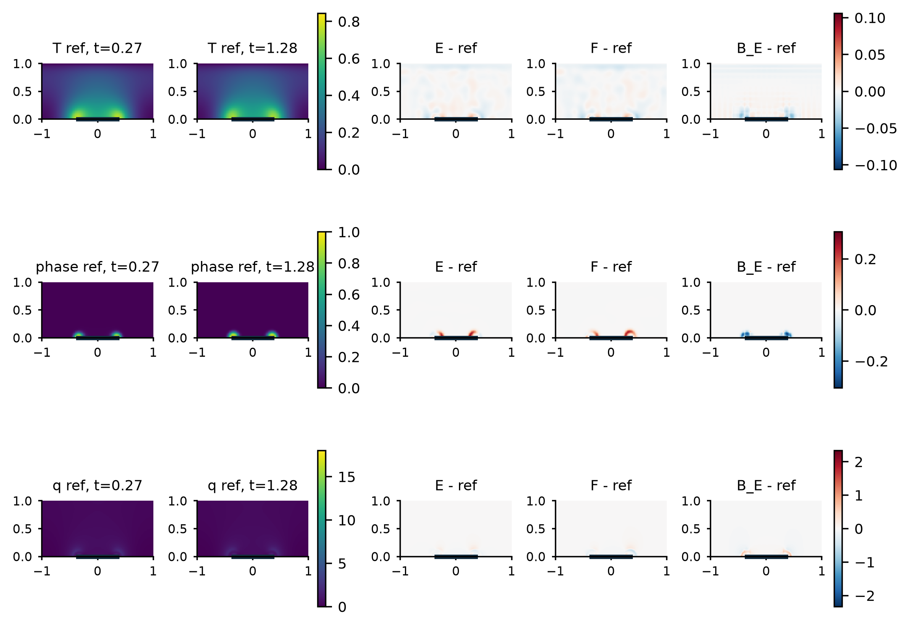
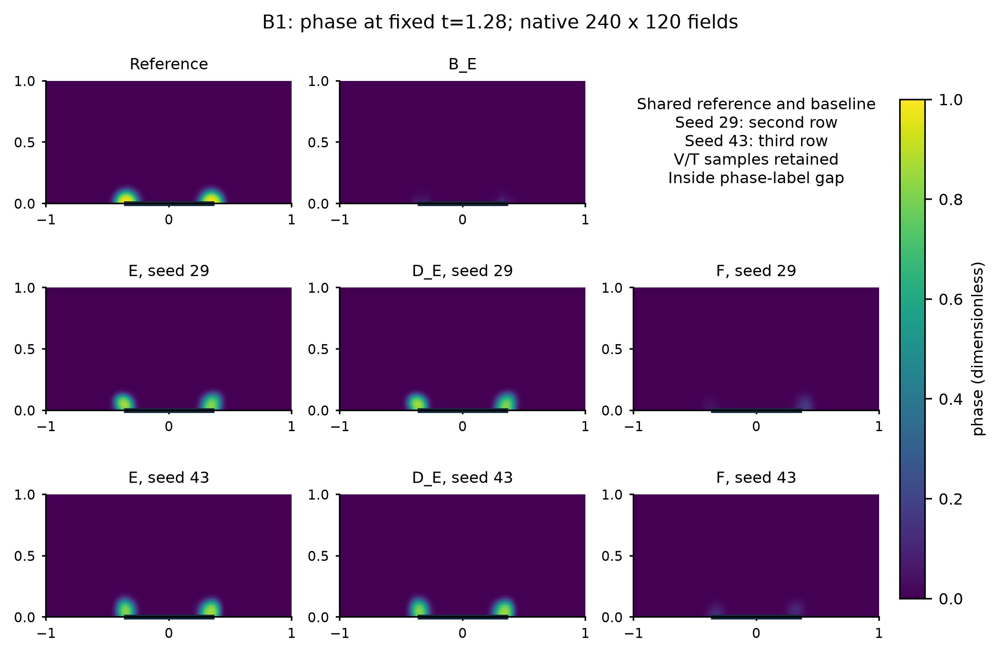
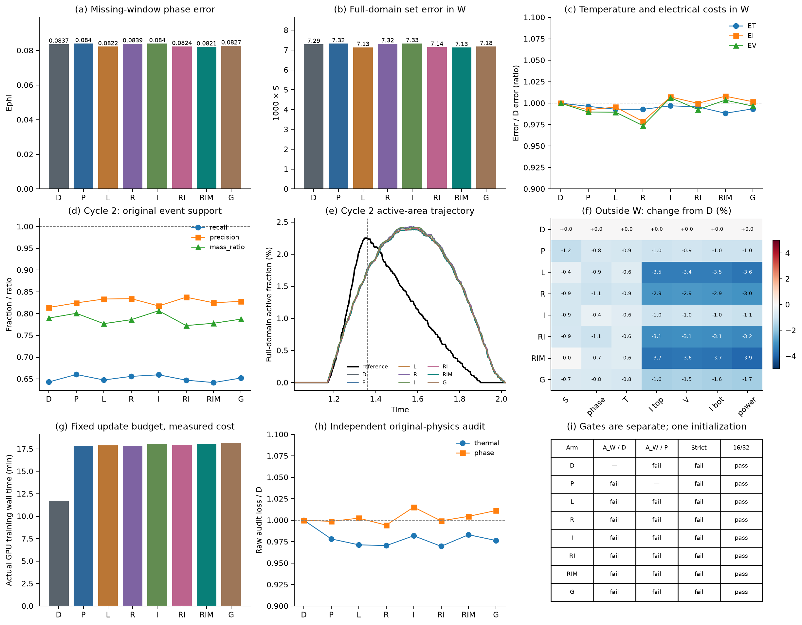

Supplementary Material
Training Time Electrical Elimination in Physics Informed Electrothermal Phase Reconstruction
The benchmark uses Ω = [-1,1] × [0,1] and 0 ≤ t ≤ 2.5. The electrical equation is quasi-static. Temperature includes latent heat, boundary cooling and local Joule deposition. Phase follows a nonconserved Allen-Cahn-type equation with temperature-dependent mobility. Table S1 lists every dimensionless coefficient used in the reported experiments.
Table S1 Model coefficients
| Quantity | Symbol | Value | Role |
|---|---|---|---|
| Thermal diffusivity | α | 0.10 | Temperature diffusion |
| Cooling coefficient | γ | 4 | Volumetric cooling |
| Latent ratio | L | 0.05 | Phase contribution to heat balance |
| Joule gain | Q | 4 | Electrical-to-thermal scale |
| Thermal conductivity factor | β | 0.25 | Conductivity dependence on T |
| Phase conductivity ratio | R | 8 | Conductivity contrast |
| Interface width | ε | 0.04 | Phase-gradient scale |
| Barrier coefficient | B | 1 | Double-well barrier |
| Thermal phase drive | D | 6 | Temperature-phase coupling |
| Transition temperature | Tc | 0.45 | Reduced transition point |
| Cold mobility | mc | 0.5 | Low-temperature mobility |
| Hot mobility | mh | 5 | High-temperature mobility |
| Mobility width | wM | 0.08 | Mobility transition width |
The full top electrode is driven, and a centered bottom segment |x| ≤ 0.35 is grounded. Other electrical faces are insulating. Temperature is fixed to zero at the top and obeys ∂nT + 0.25T = 0 elsewhere. Phase obeys ∂nφ = 0. Initially T = 0 and φ consists of a 0.02 background plus a small Gaussian seed near the lower electrode. The initial phase derivative is not pointwise compatible with the no-flux condition at the bottom corner; the discrete reference applies the stated boundary operator after t = 0. This limitation is unchanged in every comparison.
The support grid has 80 × 40 cells and time step 0.0025. The primary reference uses 160 × 80 cells and time step 0.000625. A temporal reference halves the step; a spatial reference uses 240 × 120 cells at the halved step. All references store 1,001 times. The observation mask contains 231 analytic initial positions and 28,875 positive-time positions. V, T and φ give 86,625 positive-time scalar labels in the full-label condition.
The modified multilayer perceptron has width 64 and four hidden layers. Independent heads predict potential, temperature and phase in the soft model; E and DE use only the temperature and phase heads. The temperature and phase output maps preserve the exact initial fields. Phase is represented in a bounded logit form, and all training and inference use FP64.
E assembles the finite-volume electrical matrix from the current T and φ fields. Internal and electrode conductances use series half-cell resistances. A sparse factorization returns the potential. Its transpose solve gives the first-order adjoint, including conductivity effects in the matrix, electrode right-hand side and local heating. At zero drive, the exact electrical solution and Joule source are zero.
F uses the same face network but learns a bounded potential and penalizes the cell electrical imbalance. E and F share observation, boundary, initial, thermal and phase terms. DE removes only the interior thermal and phase residuals. BE applies temporal PCHIP and spatial interpolation to visible T and φ, restores the analytic initial state, and then uses the common electrical solve. It does not use reference current, hidden fields or derivative labels.
Table S2 Frozen optimization and information conditions
| Stage | Data or branches | Adam | Complete L-BFGS evaluations | Selection rule |
|---|---|---|---|---|
| Clean parent | One parent per protocol and seed | 2,400 | 600 | Visible-data fit only |
| Full-label branch | E and F from each common parent | 1,500 | 300 | Fixed endpoint, no reference selection |
| Full-label control | DE from shorter-protocol parents | 1,500 | 300 | Same branch budget |
| Phase-gap branch | E, DE and F for seeds 29 and 43 | 1,500 | 300 | New observation-only parents |
| Phase-residual screen | D, P, L, R, I, RI, RIM and G | 600 each | 100 each | All endpoints locked before scoring |
Adam uses learning rate 10-4, β = (0.9,0.999), ε = 10-8 and gradient clipping at 10. The physics weight reaches 0.1 after 200 updates. L-BFGS uses a fixed pool, history 50 and strong-Wolfe line search. Every repeated closure counts; budget exhaustion during a trial restores the last accepted state.
State errors use trapezoidal time weights and cell-volume spatial means. Raw phase RMS and normalized temperature RMS use the fixed region of interest. Active-set error S and potential RMS use the full domain. Current and power NRMSE divide time-RMS error by the corresponding reference RMS. Signed pulse-energy errors are retained because total energy can hide cancellation.
Table S3 Main criteria
| Criterion | Required gain | Noninferiority guards | Interpretation |
|---|---|---|---|
| Reconstruction A | At least 10% in S and phase RMS, subject to absolute floors | Temperature, top current and potential within 5% | Whole-history state criterion |
| Device B | At least 10% in bottom-current and power NRMSE | S, phase, temperature, potential and top current within 5% | Whole-history device criterion |
| Phase-gap Aw | Same 10% phase gains inside W | Temperature, top current and potential within 5% | Missing-window criterion |
| Strict two-cycle rule | Both cycles pass all event requirements | Onset ≤ 0.005; recall ≥ 0.9; precision ≥ 0.8; mass ratio 0.8-1.2; peak, locality and recovery limits | Event fidelity, separate from A and B |
These are fixed practical thresholds, not significance tests. A failed threshold does not prove equivalence, and a favorable continuous change does not count as a pass. Reference and reader variants are sensitivity checks on the same trained endpoints.
Table S4 Complete full-label values under the spatial reference and fine reader
| Protocol | Seed | Method | Phase RMS | Current % | Power % |
|---|---|---|---|---|---|
| Original | 29 | E | 0.021062 | 0.8833 | 0.8900 |
| Original | 29 | F | 0.024750 | 1.6673 | 1.7070 |
| Original | 43 | E | 0.022458 | 1.5978 | 1.6216 |
| Original | 43 | F | 0.025165 | 3.0748 | 3.1821 |
| Original | Shared | BE | 0.023310 | 1.6112 | 1.6366 |
| Shorter | 29 | E | 0.019936 | 1.0156 | 1.0237 |
| Shorter | 29 | F | 0.024450 | 2.2768 | 2.3432 |
| Shorter | 43 | E | 0.019763 | 0.7005 | 0.6947 |
| Shorter | 43 | F | 0.024099 | 2.9838 | 3.0871 |
| Shorter | Shared | BE | 0.025217 | 1.9043 | 1.9475 |
| Shorter | 29 | DE | 0.019468 | 0.9581 | 0.9652 |
| Shorter | 43 | DE | 0.019709 | 0.6429 | 0.6245 |
E/F passes the complete device criterion for all four pairs under every tested numerical reference and reader. DE is nevertheless better than E for both shorter-protocol seeds. The separation between these findings is deliberate: E/F tests the electrical-constraint package, whereas E/DE tests the added interior residuals.
Table S5 Strong-interpolant counterexample for original-protocol seed 43
| Reference | E current % | BE current % | E power % | BE power % | Original A B |
|---|---|---|---|---|---|
| Original | 1.6311 | 1.6200 | 1.6574 | 1.6464 | False False |
| Time refined | 1.6533 | 1.5705 | 1.6819 | 1.5961 | False False |
| Space refined | 1.5978 | 1.6112 | 1.6216 | 1.6366 | False False |

Figure S1 Full-label shorter-protocol fields and signed errors for seed 29. State and Joule-density panels are descriptive native-grid views; the primary phase metric uses the fixed 160 × 80 measure.
The phase-gap condition removes 11,781 φ labels in W = [1.01,2.02]. It retains 17,094 positive-time φ labels, including samples after W, and all 28,875 V and T labels. New parents are fitted for seeds 29 and 43. Complete-label weights, calibration pools and endpoints are not reused.
Table S6 Phase-gap errors under the spatial reference and fine reader
| Seed | Method | 1000 S | Phase RMS | Temperature % | Current % | Power % |
|---|---|---|---|---|---|---|
| 29 | E | 8.9242 | 0.102408 | 1.1400 | 1.1049 | 1.1199 |
| 29 | DE | 9.0420 | 0.103548 | 1.1348 | 1.1556 | 1.1708 |
| 29 | F | 7.7502 | 0.121882 | 1.1689 | 8.9601 | 8.4221 |
| 43 | E | 8.0082 | 0.090626 | 1.1075 | 0.9310 | 0.9504 |
| 43 | DE | 7.6116 | 0.086987 | 1.1269 | 0.9961 | 1.0099 |
| 43 | F | 7.7502 | 0.109148 | 1.1194 | 8.9002 | 8.3830 |
| - | BE | 7.7502 | 0.127808 | 1.4138 | 9.0885 | 8.5569 |
E versus DE passes Aw in 0 of 12 reference-reader checks. The phase gains are 1.10-1.23% for seed 29 and -4.23 to -4.18% for seed 43. Outside-window costs occur in 6 of 12 checks and affect top current, potential, bottom current or power. Every tested object fails the strict two-cycle rule.

Figure S2 Phase at t = 1.28 inside the missing-label interval. The reference, shared interpolant, and E, DE and F endpoints for both seeds use the same color scale.
The active-set error is dominated by activity that persists or moves beyond the reference support after heating. A correct onset in one metric does not imply adequate recall, precision or mass. Recovery values are reported independently and are not relabeled as failures when they pass.
The screen tests whether the original phase residual is downweighted near pure states. D omits the internal thermal and phase terms. P uses the raw phase residual on a common panel support. L uses the complete phase logit residual. R uses a finite logit coordinate with δ = 10-8. I adds a zeroth interval moment in the raw coordinate. RI combines the finite coordinate and zeroth moment. RIM adds the first Legendre moment. G rescales the raw phase term to match the initial RIM phase-gradient norm. All calibrations are fixed before training and do not use reference fields.
Table S7 Eight-arm missing-window results
| Arm | Phase target | Phase RMS | 1000 S | Temperature | Current | Potential | Strict |
|---|---|---|---|---|---|---|---|
| D | None | 0.08373 | 7.290 | 0.01310 | 0.02508 | 0.00452 | Fail |
| P | Raw point residual | 0.08402 | 7.323 | 0.01305 | 0.02489 | 0.00447 | Fail |
| L | Complete logit | 0.08223 | 7.134 | 0.01301 | 0.02497 | 0.00447 | Fail |
| R | Finite logit | 0.08392 | 7.318 | 0.01301 | 0.02455 | 0.00440 | Fail |
| I | Raw plus zeroth moment | 0.08399 | 7.328 | 0.01306 | 0.02527 | 0.00454 | Fail |
| RI | Finite logit plus zeroth moment | 0.08236 | 7.143 | 0.01304 | 0.02508 | 0.00448 | Fail |
| RIM | Finite logit plus two moments | 0.08212 | 7.130 | 0.01295 | 0.02529 | 0.00453 | Fail |
| G | Gradient-matched raw residual | 0.08271 | 7.180 | 0.01301 | 0.02513 | 0.00450 | Fail |
RIM improves phase RMS and S by 1.92% and 2.20% relative to D, and by 2.26% and 2.63% relative to P. It improves phase RMS by 0.14% over L, 0.30% over RI and 0.72% over G. All 56 ordered comparisons fail Aw, whole-history A and whole-history B. No outside-window cost flag is raised. These ordered comparisons are not independent samples.

Figure S3 Complete eight-arm development result. The panels separate phase errors, temperature and electrical costs, event support, wall time, the independent raw-physics audit and numerical validity.
RIM second-cycle onset differs from the reference by 0.00035 and recovery equals 1, but recall is 0.6417, precision 0.8249 and mass ratio 0.7779. Its active-area peak occurs at 1.5425 rather than 1.3475. After-pulse false-positive area contributes 78.24% of its window set error. The original raw phase residual is 0.45% higher than D and 0.59% higher than P at the RIM endpoint.
Reference changes keep learned states fixed. Temporal refinement changes no historical A/B decision. Spatial refinement changes three historical decisions, including a BE crossing that disappears with the finer prediction reader. The complete E/F device criterion remains true in every tested condition. These checks bound the observed ranking but do not establish a convergence rate.
Table S8 Numerical qualification of the phase-residual screen
| Check | Maximum objective change | Maximum gradient-norm change | Outcome |
|---|---|---|---|
| Parent 8 versus 16 Gauss points | 8.16 × 10-8 | 8.61 × 10-7 | Pass |
| Endpoint 8 versus 16 | 5.50 × 10-8 | 6.40 × 10-7 | Pass |
| Endpoint 16 versus 32 | 2.41 × 10-13 | 7.45 × 10-13 | Pass |
The predeclared tolerances are 1% for objective values and 5% for gradient norms. The checks use fixed fields and no optimizer updates. Twenty-one focused and inherited tests cover the latent phase chain rule, finite-coordinate derivatives, moment identities, panel weights, electrical counts, thermal-block preservation, fixed L-BFGS targets and rollback behavior.
Table S9 Actual work for the two final campaigns
| Campaign | Adam updates | Complete evaluations | Training forward adjoint | Common readout forward | Independent trainings |
|---|---|---|---|---|---|
| Second-cycle phase gap | 13,800 | 3,000 | 62,536 / 62,536 | 3,892 | 2 parents with 6 branches |
| Relative phase moments | 4,800 | 800 | 51,848 / 51,848 | 2,224 | 1 parent with 8 branches |
The published repository contains source code, frozen configurations, tests, complete tables, figures, compact scoring evidence and sanitized compute-closure records. The phase-gap package also includes selected parent and endpoint states and finite port traces. Complete native space-time arrays, optimizer states and full recovery archives remain local. The public subset supports review of the reported numbers and gates but does not reproduce every array-level score from scratch.
No sealed stress case, experimental device data or material calibration enters these results. Reproduction of a new scientific run requires a separately named output directory and a new execution authorization; the archived endpoints must not be overwritten.
Feng X, Shangguan H, Tang T, Wan X. Integral regularization PINNs for evolution equations. Communications in Computational Physics 39, 356-386, 2026. DOI 10.4208/cicp.OA-2025-0082.
Kharazmi E, Zhang Z, Karniadakis GE. Variational physics-informed neural networks for solving partial differential equations. arXiv:1912.00873, 2019.
Saleh E et al. Learning from integral losses in physics informed neural networks. Proceedings of Machine Learning Research 235, 43077-43111, 2024.
De Ryck T et al. An operator preconditioning perspective on training in physics-informed machine learning. International Conference on Learning Representations, 2024.